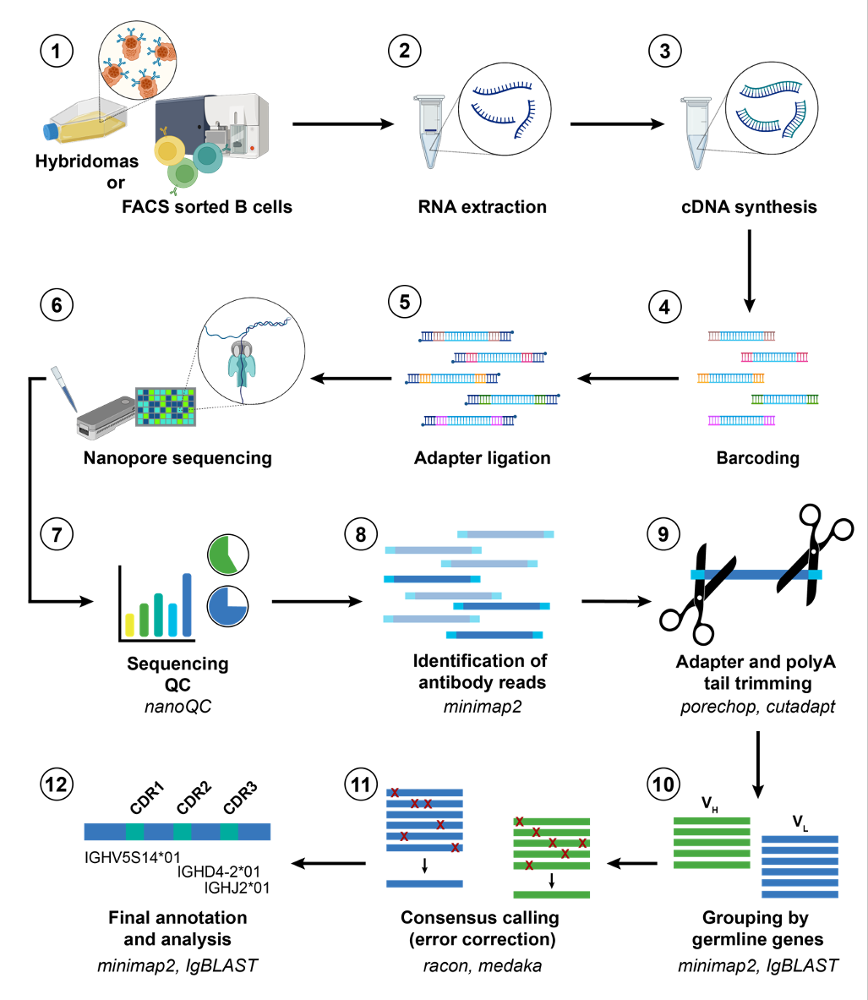
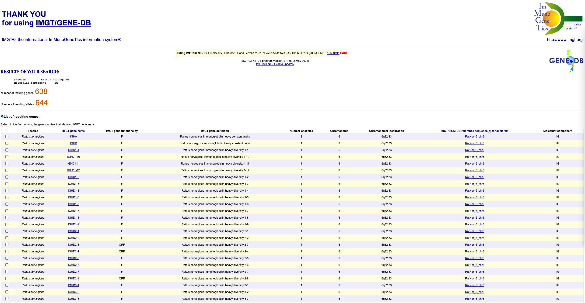
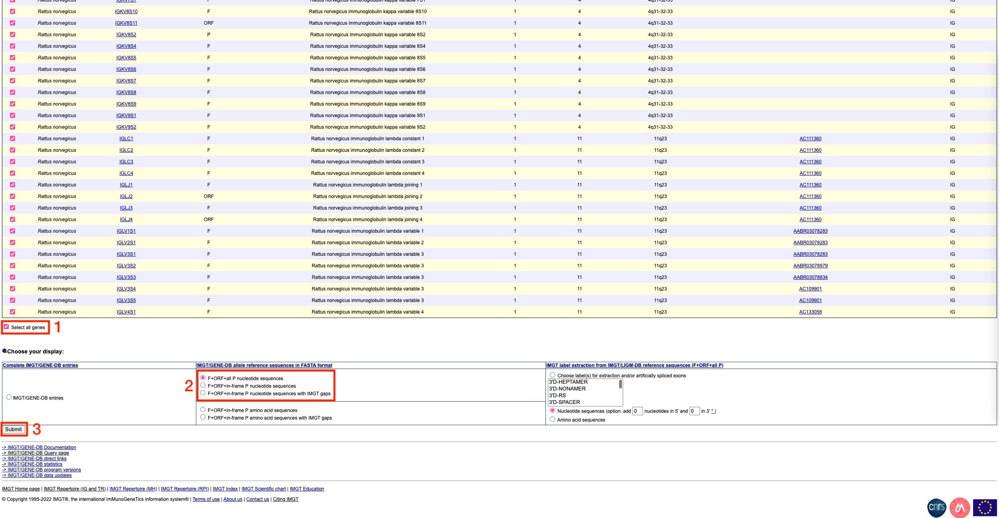
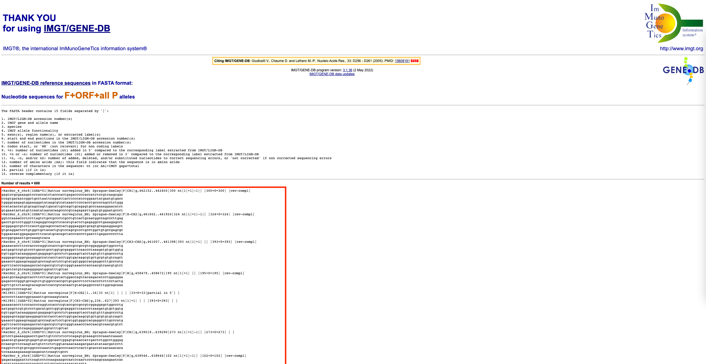
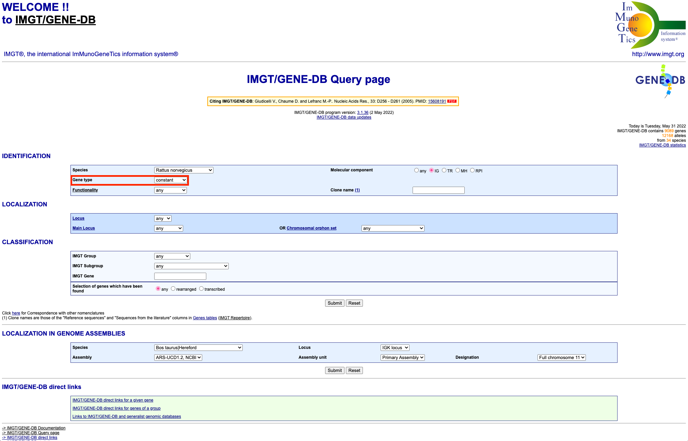
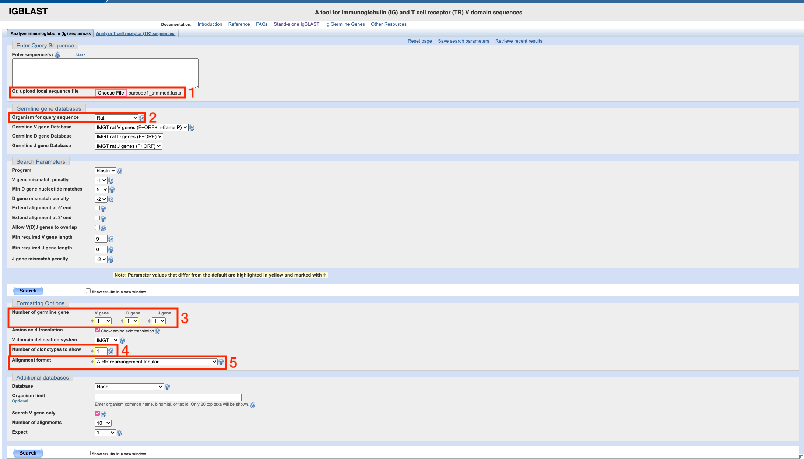
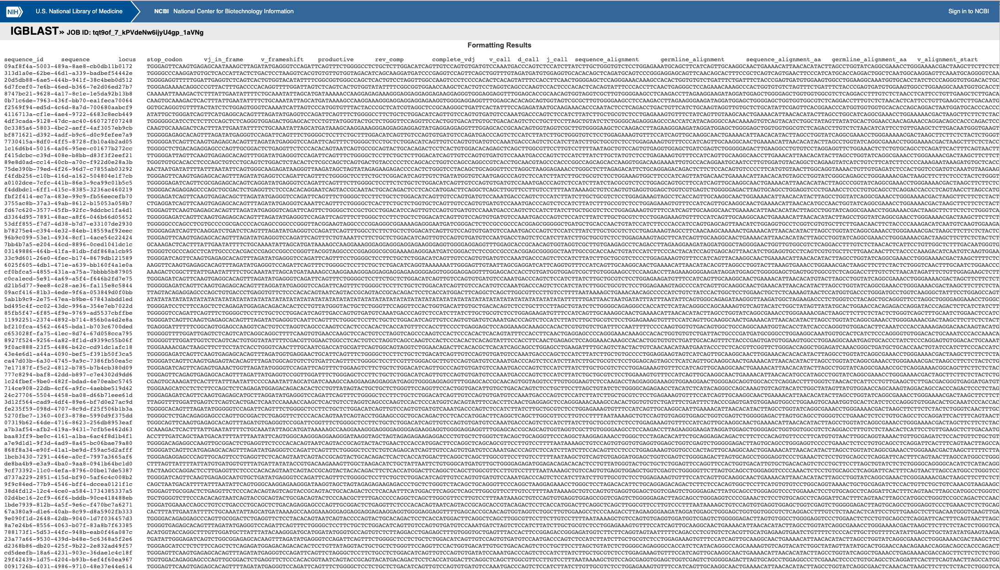
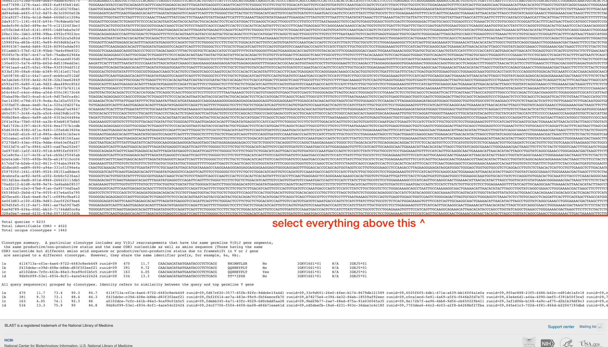

NAb-seq bioinformatics tutorial (old)
Kathleen Zeglinski
2022-11-12
Introduction
EDIT 7/11/2022: This page explains how to run the old v0.1 of NAb-seq. We highly recommend you use NAb-seq v0.2 if possible (see top of page for an updated tutorial)
Welcome to the NAb-seq bioinformatics tutorial! This document will
explain in detail how to generate high-accuracy antibody consensus
sequences from whole-transcriptome nanopore sequencing data, as
explained in the NAb-seq
paper. An end-to-end script that covers all of the steps is
available from the NAb-seq github
repository, but going step-by-step is helpful for better
understanding the process and troubleshooting.
The following figure summarises the steps of the NAb-seq workflow: 
(since this is a bioinformatics tutorial, we will start from step 7,
the sequencing QC)
Software required
The NAb-seq bioinformatics tutorial uses the following software:
NanoComp (optional, for QC purposes only)
minimap2 (for identification of antibody reads, and annotation of constant regions)
cutadapt (for trimming of adapters & polyA tails)
SeqKit (for manipulation of sequence files)
IgBLAST (for annotation of variable regions)
Racon (for consensus calling/error correction)
Medaka (for consensus calling/error correction)
R/RStudio (for processing the output of various tools & analysing the results)
- tidyverse packages will
need to be installed
- tidyverse packages will
need to be installed
As each tool is required during the analysis process, installation
instructions are provided. Alternatively, detailed instructions for
installing and using each of the tools can be found at the links
above.
Input files
Before beginning, it is important to prepare the necessary input files. These are:
Basecalled and demultiplexed ‘pass’ fastq files. These files come from running nanopore’s guppy basecalling tool, and should have names like barcode1_pass.fq.gz
Basecalling means converting reads from raw signal into nucleotide sequences
Demultiplexing means bioinformatically separating reads based on the barcodes added during library preparation
Pass reads are reads that have an average quality above a certain cutoff (for nanopore super-high accuracy reads, this is a Q score of 10, or about 90% accuracy)
Constant gene reference fasta file. This should be a fasta format file containing the sequences of all constant genes for your organism of interest. In the NAb-seq github repository, files for rat and mouse are provided. To ensure you have the most up-to-date information, or to make files for another organism, these reference sequences can be retrieved from the IMGT website. See the appendix for detailed instructions on how to prepare the reference files.
Variable AND constant gene reference fasta file. This file should be the same as above, except that it should include the V(D)J variable region genes as well as the constant ones.
Sequencing summary .txt file. This is a file generated during sequencing, and it contains information about the reads (e.g. length, quality, number). This file is optional: it is required only for the quality control (QC) process.
In this tutorial, we will use as an example the reads from library A
(representing the 7D10 antibody sequence). More information about this
sample and how it was generated can be found in the NAb-seq
paper. This data can be downloaded from the European Nucleotide
Archive (ENA), under accession number PRJEB51442.
To follow this tutorial, download the file named
library_A.fq.gz. The following code assumes that your
library_A.fq.gz file is located within a folder called
input_data.
Quality control (QC)
Quality control (QC) is an important first step in bioinformatic
workflows. QC tools can give us an idea of how well the sequencing run
worked, in terms of the number of reads, what their quality (accuracy)
is and how long they are. There are a number of tools for QC of nanopore
sequencing data, but here we will use NanoComp.
QC with NanoComp
NanoComp is written in python, and can be installed via pip using the
command: pip install NanoComp.
Once installed, the QC can be run as follows from within the
tutorial folder:
# make a folder to store the QC results
mkdir qc
# run NanoComp
NanoComp --threads 4 --outdir qc --prefix "hybridomas" --barcoded --summary input_data/sequencing_summary_AGG119_0904ab6e.txt.gzWhere:
--threads 4is the number of threads--outdir qctells NanoComp to put its output in theqcfolder--prefix "hybridomas"is the name we want to give this QC report--barcodedtells NanoComp that our sequencing run is barcoded, so it will compare the various QC metrics across barcodes--summarytells NanoComp the location of our sequencing summary file (change this to reflect your own sequencing summary file)
This command will produce a range of output files. These include:
hybridomasNanoComp-report.htmlwhich is report that will open in any web browser, containing all of the QC plotshybridomasNanoComp-data.tsv.gzwhich is a file that contains the raw QC data used to make the plots. This can be useful if you want to do further analysis or make figures for a publicationA range of .png files of each of the individual plots
When looking at the results, the most important metric is the number
of reads per barcode. A minimum of at least 40,000 reads per
barcode is recommended. Below this number, the number of
antibody transcripts may be insufficient to generate highly-accurate
consensus sequences. If you are trying to detect the presence of
additional productive heavy/light chains (which may have a low abundance
(Bradbury et al. 2018)), then the more
reads the better.
Identification of antibody reads
Once we have verified that the sequencing run went ok, the next step
is to identify antibody reads. We will do this by aligning all of our
reads (which represent the whole transcriptome) to the IMGT antibody
reference sequences described in the input files
section. The alignment tool (minimap2) will output a file
describing all of the alignments it found between our reads and the
antibody reference sequences. We will process this file in R to get a
list of all candidate antibody reads, and then extract these from the
main file using SeqKit.
Aligning reads to the antibody reference sequences
If you don’t have it already, you will first need to install
minimap2. This is easiest through conda (more information about setting
up conda can be found here).
You can simply run the command
conda install -c bioconda minimap2. Alternatively, it is
available to download from github.
Running minimap2 is straightforward:
# make a folder to store the results of this step
mkdir identifying_ab_reads
# run minimap2
minimap2 -x map-ont -n 4 \
reference_sequences/imgt_rattus_norvegicus_refs.fasta \
inputdata/library_A_pass.fq.gz > \
identifying_ab_reads/library_A_reference_alignment.pafWhere:
-x map-onttells minimap2 to use settings designed for aligning error-prone long reads-n 4is the number of threadsreference_sequences/imgt_rattus_norvegicus_refs.fastais the location of the IMGT antibody reference sequence file described in the input files section.inputdata/library_A_pass.fq.gzis the location of our basecalled, demultiplexed pass reads fileidentifying_ab_reads/library_A_reference_alignment.pafis the output file, where minimap2 will give us information about the alignments
We will now read this file into R to get a list of all the antibody-containing reads.
# read the file into R
# col_names = FALSE lets it know that the first row isn't column names, rather it is data
library_A_paf <- read_tsv(
"identifying_ab_reads/library_A_reference_alignment.paf",
col_names = FALSE)
# grab the first column, X1 (this is the one with the names of the antibody-containing reads)
# we use unique() here to account for reads aligning to multiple reference sequences
library_A_ab_read_names <- unique(library_A_paf$X1)
# write out these read names into a file, which we can use to subset our reads later
# we use \n (new line) to separate the names, so each name will be on its own line
write_lines(library_A_ab_read_names,
"identifying_ab_reads/library_A_ab_read_names.txt",
sep = "\n")
Also, at this stage, you might want to check how many antibody
containing reads you have, broken down by whether they are heavy or
light chain. This can be done in R as follows:
# to count heavy chain reads
length(unique(library_A_paf[grepl("IGH", library_A_paf$X6) ,]$X1))## [1] 1111# to count a specific heavy chain isotype, like IGHG
# can replace IGHG with IGHM or IGHA or IGHD etc
length(unique(library_A_paf[grepl("IGHG", library_A_paf$X6) ,]$X1))## [1] 1083# to count kappa light chains
length(unique(library_A_paf[grepl("IGK", library_A_paf$X6) ,]$X1))## [1] 4277# to count lambda light chains
length(unique(library_A_paf[grepl("IGL", library_A_paf$X6) ,]$X1))## [1] 845At a minimum, it would be good to have at least 25 reads for
each of the heavy and light chains.
Extracting antibody reads
Once we have a list of the names of the antibody-containing reads, we need to extract these from the .fastq file that contains all our reads (the whole transcriptome). This will give us a second .fastq file that just contains antibody sequences that will be used in the next steps.
To do this, we will use SeqKit, a program
designed for manipulating .fasta and .fastq files. It is best downloaded
through conda using the command
conda install -c bioconda seqkit. Other installation
methods are available on the SeqKit github
page.
Once installed, we can extract the antibody containing reads as follows:
seqkit grep --by-name --use-regexp \
-f identifying_ab_reads/library_A_ab_read_names.txt \
inputdata/library_A_pass.fq.gz \
-o identifying_ab_reads/library_A_ab_reads.fastq
Where:
grepis the tool within SeqKit that searches for sequences--by-nametells SeqKit to match reads by their full name--use-regexptells SeqKit to use patterns that are regular expressions-f identifying_ab_reads/library_A_ab_read_names.txttells SeqKit where it can find the read names-o identifying_ab_reads/library_A_ab_reads.fastqis the output file (a .fastq file of just antibody reads)
Read trimming
Now that we have our antibody reads, we need to trim off polyA tails. This is important because they can interfere with the consensus calling process. Note that we do not need to trim off any adapters for this data because when sequencing hybridomas using the nanopore PCR-cDNA kit as explained in the NAb-seq paper, adapters and barcodes are trimmed off by guppy after basecalling.
To trim our reads, we will use cutadapt. It can be
installed through conda using the following command:
conda install -c bioconda cutadapt
Once installed, cutadapt can be run as follows:
cutadapt -a "A{100}" -g "T{100}" -n 2 \
-o identifying_ab_reads/library_A_trimmed.fastq \
identifying_ab_reads/library_A_ab_reads.fastq
Where:
-a "A{100}"tells cutadapt to trim a sequence of up to 100 repeated A nucleotides from the 3’ end of the reads-g "T{100}"tells cutadapt to trim a sequence of up to 100 repeated T nucleotides from the 5’ end of the reads-n 2tells cutadapt to run twice, once to detect the 3’ polyA tail and once to detect the 5’ polyT-o library_A_trimmed.fastqis the output file containing our trimmed reads
After trimming it is also a good idea to make a .fasta version of this file (.fasta files contain the sequence only, while .fastq files also contain base quality information). This is important because IgBLAST (the tool we will use in the next step to identify variable region genes) needs a .fasta format input file. It can be done using SeqKit:
seqkit fq2fa identifying_ab_reads/library_A_trimmed.fastq \
-o identifying_ab_reads/library_A_trimmed.fasta
Grouping by germline genes
Now that the reads have been trimmed, we can begin the process of
error correction. To ensure that the corrections we make are accurate,
we must group the antibody reads by their germline V(D)J genes. This is
because we know that not all of the heavy/light chain transcripts in a
cell will be the same: there may be leaky transcription from the second
allele, hybridomas may express multiple productive heavy/light chains
(Bradbury et al. 2018) and there could be
PCR chimeras between the different transcripts. Our error correction
approach relies on taking the consensus of multiple copies of the
same transcript, which means we first need to
group those transcripts that are the same. Transcripts
are grouped based on their variable and constant germline genes which we
will identify using IgBLAST and minimap2 respectively.
Annotation of variable regions using IgBLAST
We can identify variable region genes (V, D and J) using IgBLAST. Other tools you could use include MiGMAP or IMGT/HighV-QUEST but here we will focus on IgBLAST as it is freely available and can be used through a webserver or the command line.
Installing the command line version of IgBLAST is relatively
complicated. The official instructions are available here,
and there is another good guide here. If you would
prefer to use the web version, there are step-by-step instructions
available in the appendix.
The command-line tool can be used as follows:
# first, make the directory that we will use to store this step's results
mkdir grouping_by_germline_genes
mkdir consensus_calling
igblast_database_path="put your path here"
igblast_auxiliary_data_path="put your path here"
igblastn -germline_db_V ${igblast_database_path}/rat_V \
-germline_db_J ${igblast_database_path}/rat_J \
-germline_db_D ${igblast_database_path}/rat_D \
-organism rat \
-query identifying_ab_reads/library_A_trimmed.fasta \
-auxiliary_data $igblast_auxiliary_data_path -show_translation \
-num_alignments_V 1 -num_alignments_D 1 -num_alignments_J 1 \
-outfmt 19 > \
grouping_by_germline_genes/library_A_igblast_pre_consensus.tsvWhere:
igblast_database_pathis the path to your IgBLAST databaseigblast_auxiliary_data_pathis the path to your auxiliary_data file-query identifying_ab_reads/library_A_trimmed.fastatells IgBLAST where to find your trimmed .fasta file of antibody reads-num_alignments_V(and D and J) are the number of V/D/J genes that IgBLAST will output for each clone-show_translationtells IgBLAST to show the amino acid sequence-outfmt 19tells IgBLAST to output an AIRR formatted table
Annotation of constant regions using minimap2
As of 13/12/21 IgBLAST can now identify constant regions, but since
NAb-seq was developed prior to this we will use minimap2 instead. The process
is very similar to how we identified the antibody
reads, except this time we will use the reference file that only
contains constant genes (as described in the introduction).
# if you haven't already, make a directory to store the results of the grouping step
mkdir grouping_by_germline_genes
# run minimap2
minimap2 -x map-ont -n 4 \
reference_sequences/imgt_rattus_norvegicus_constant_regions.fasta \
identifying_ab_reads/library_A_trimmed.fastq > \
grouping_by_germline_genes/library_A_constant_alignment.pafWhere:
-x map-onttells minimap2 to use settings designed for aligning error-prone long reads-n 4is the number of threadsreference_sequences/imgt_rattus_norvegicus_constant_regions.fastais the location of the constant region only IMGT antibody reference sequence file described in the input files section.identifying_ab_reads/library_A_trimmed.fastqis the location of our trimmed reads from the previous stepgrouping_by_germline_genes/library_A_constant_alignment.pafis the output file, where minimap2 will give us information about the constant regions of our reads
We will now combine the variable and constant region calls in
R.
Grouping reads by germline genes in R
Combining the variable and constant calls
Before we can group the reads, we need to combine our variable and constant calls into one big table. First, we need to read the files in:
# read in variable calls
library_A_variable_calls <- read_tsv(
"grouping_by_germline_genes/library_A_igblast_pre_consensus.tsv")
# read in constant calls
library_A_constant_calls <- read_tsv(
"grouping_by_germline_genes/library_A_constant_alignment.paf",
col_names = FALSE)
Next, we need to clean up the constant region calls data a little:
# for the constant calls, we only need three columns: the read name, the read length and the constant gene (C) call
# select these columns:
library_A_constant_calls <- library_A_constant_calls[, c(1, 2, 6)]
# give them informative names
colnames(library_A_constant_calls) <- c("read_name", "read_length", "c_call")
# remove any duplicate rows (antibodies with 2+ C gene calls)
library_A_constant_calls <- distinct(library_A_constant_calls, read_name, .keep_all = TRUE)
# tidy up the constant gene names (remove the extra information so it's just like IGKC*02 etc)
library_A_constant_calls$c_call <- str_replace(library_A_constant_calls$c_call, ".*?\\|", "")
library_A_constant_calls$c_call <- str_replace(library_A_constant_calls$c_call, "\\|.*", "")
Finally, we can combine the two tables:
# tidy up the read names (remove extra information so they can be easily matched)
library_A_constant_calls$read_name <- str_replace(library_A_constant_calls$read_name, "_.*", "")
library_A_variable_calls$sequence_id <- str_replace(library_A_variable_calls$sequence_id, "_.*", "")
# combine the two into one big table
library_A_calls <- left_join(library_A_variable_calls, library_A_constant_calls,
by = c("sequence_id" = "read_name"))
Grouping the reads
Now that we have a single table with all of the information about our antibody reads, we can group those that are the same.
# add n column to count up how many reads fall into each
library_A_calls$n <- rep(1, nrow(library_A_calls))
# group the reads
library_A_calls %>%
group_by(v_call, d_call, j_call, c_call) %>%
summarise(count = sum(n), .groups = "keep",
reads = paste(sequence_id, collapse = "\n")) -> grouped_library_A_calls
# write out a copy of this table
write_tsv(grouped_library_A_calls,
"grouping_by_germline_genes/grouped_library_A_calls.tsv")
At this stage, you might like to take a closer look at the grouped gene calls. In the next step, we will prepare the necessary files for calling a consensus on the top n most abundant groups. You can choose a value of n that suits you, although it is worth keeping in mind that:
A consensus can’t be called for groups with less than 3 reads
For groups with 3-5 reads, although a consensus can be called it is unlikely to be 100% accurate
One of the tools used for consensus calling, Medaka, takes a fair bit of time to initialise for each group you want to call a consensus on. If you want to call large numbers (>300) of consensus sequences you may want to consider parallelising this step
In general, we recommend calling a consensus for the top 25 or 50
groups. In this tutorial, we will use the top 25.
Preparing for consensus calling
We will now prepare the files for consensus calling. We need to choose a ‘starting copy’ that will form the basis for the error correction and make a list of all of the other reads that will be used for the correction.
# separate out the heavy and light chains
grouped_library_A_calls_H <- filter(grouped_library_A_calls, str_detect(v_call, "H"))
grouped_library_A_calls_L <- filter(grouped_library_A_calls,
str_detect(v_call, "H", negate = TRUE))
# sort them in descending order by read count
grouped_library_A_calls_H <- arrange(grouped_library_A_calls_H, desc(count))
grouped_library_A_calls_L <- arrange(grouped_library_A_calls_L, desc(count))
# select the top n clones (here, n = 25)
# just edit these lines to change the number of groups a consensus will be called for
grouped_library_A_calls_H <- grouped_library_A_calls_H[1:25,]
grouped_library_A_calls_L <- grouped_library_A_calls_L[1:25,]
# give each clone's H and L chain a unique name in the form of H1, H2, L1, L2 etc where 1 is the most abundant, 2 is the second most abundant etc
grouped_library_A_calls_H$group_id <- paste0("H", seq_len(nrow(grouped_library_A_calls_H)))
grouped_library_A_calls_L$group_id <- paste0("L", seq_len(nrow(grouped_library_A_calls_L)))
# write out the read names for each clone into a .txt file
for (i in seq_along(
grouped_library_A_calls_H$group_id)) {
this_group_id <- grouped_library_A_calls_H$group_id[i]
write_lines(
x = grouped_library_A_calls_H$reads[i],
file = paste0("consensus_calling/library_A_",
this_group_id, ".txt"))
}
for (i in seq_along(
grouped_library_A_calls_L$group_id)) {
this_group_id <- grouped_library_A_calls_L$group_id[i]
write_lines(
x = grouped_library_A_calls_L$reads[i],
file = paste0("consensus_calling/library_A_",
this_group_id, ".txt"))
}
# choose the starting copy
# make a long format data where each read is a row (but still keep track of which group each read belongs to)
grouped_library_A_calls_long <- bind_rows(
separate_rows(grouped_library_A_calls_L, reads, sep = "\n"),
separate_rows(grouped_library_A_calls_H, reads, sep = "\n"))
# combine this with the read length from the library_A_calls table so that we can choose the longest read in each group
grouped_library_A_calls_long <- left_join(
library_A_calls[, c("sequence_id", "read_length")],
grouped_library_A_calls_long[, c("reads", "group_id")],
by = c("sequence_id" = "reads"))
# remove the reads that do not belong to a group
grouped_library_A_calls_long <-
grouped_library_A_calls_long[!is.na(grouped_library_A_calls_long$group_id) ,]
# select the longest read for each group (more likely to have a full-length constant region)
grouped_library_A_calls_long %>%
group_by(group_id) %>%
slice(which.max(read_length)) -> library_A_grouped_longest_reads
# write out these longest reads as the starting copies
for (i in seq_along(library_A_grouped_longest_reads$sequence_id)) {
this_group_id <- library_A_grouped_longest_reads$group_id[i]
write_lines(x = library_A_grouped_longest_reads$sequence_id[i],
file = paste0("consensus_calling/library_A_", this_group_id, "_starting_point_name.txt"))
}
Consensus calling
Consensus calling is a way to correct errors in sequencing data. By
stacking up copies of the same sequence and taking their consensus, it
is possible to remove random errors that likely occur in only one of the
copies. NAb-seq employs a two-step consensus calling approach, using Racon and Medaka on each group
of reads from the previous step. They can both be installed through
conda using the command
conda install -c bioconda medaka.
The following code will call the consensus for the 25 most abundant heavy and light chains. It should be executed as a shell script.
Click here to show/hide consensus calling code
rebasecalled_reads_file=identifying_ab_reads/library_A_trimmed.fastq
current_dir=consensus_calling/
# heavy chain
for i in {1..25}
do
# set up the file names
# the clone name is the name of this group of V(D)JC genes
clone_name=library_A_H${i}
echo $clone_name
# the read name file contains all of the reads in the group
read_name_file=${current_dir}${clone_name}.txt
# the starting point name file contains the name of the read that will be used for polishing
starting_point_name_file=${current_dir}${clone_name}_starting_point_name.txt
# these are the reads named in the read_name_file
clone_reads_file=${current_dir}${clone_name}_reads.fastq
# this is the same file as above, but with the reads renamed (long read names or odd characters can cause problems with the tools we will use later)
clone_reads_file_renamed=${current_dir}${clone_name}_reads_renamed.fastq
# this is the same file as above, but with duplicates renamed (duplicates cause issues with the consensus calling tools)
clone_reads_file_renamed_dup_fixed=${current_dir}${clone_name}_reads_renamed_dup_fixed.fastq
# this removes any sequences with length 0 (again, causes issues with the tools)
clone_reads_file_renamed_dup_fixed_len_fixed=${current_dir}${clone_name}_reads_renamed_dup_fixed_len_fixed.fastq
# this is the read that will be the starting point for polishing
polishing_starting_point=${current_dir}${clone_name}_starting_point.fastq
# the starting point, renamed
polishing_starting_point_renamed=${current_dir}${clone_name}_starting_point_renamed.fastq
# the alignment of the reads in the group to the starting point
all_to_start_overlaps=${current_dir}${clone_name}_overlaps.sam
# the output file from racon
racon_consensus=${current_dir}${clone_name}_racon_consensus.fasta
# the output folder from medaka
medaka_consensus_folder=${current_dir}/${clone_name}/
# confirm we have a starting point for polishing (if not, then skip this group)
if [ -f "$starting_point_name_file" ]; then
echo "found starting point"
else
continue
fi
# extract reads from fastq
# clean up file as descibed above
seqkit grep -n -r -f $read_name_file $rebasecalled_reads_file -o $clone_reads_file
seqkit replace -p "\_.*" -r "" $clone_reads_file > $clone_reads_file_renamed
seqkit rename $clone_reads_file_renamed > $clone_reads_file_renamed_dup_fixed
seqkit seq -m 1 $clone_reads_file_renamed_dup_fixed > $clone_reads_file_renamed_dup_fixed_len_fixed
# extract starting copy
seqkit grep -n -r -f $starting_point_name_file $rebasecalled_reads_file -o $polishing_starting_point
seqkit replace -p ".*" -r $clone_name $polishing_starting_point > $polishing_starting_point_renamed
# run racon
# need to align first
minimap2 $polishing_starting_point_renamed $clone_reads_file_renamed_dup_fixed_len_fixed --secondary=no -ax map-ont -o $all_to_start_overlaps
racon -w 5000 -t 4 -u -g -8 -x -6 -m 8 --no-trimming $clone_reads_file_renamed_dup_fixed_len_fixed $all_to_start_overlaps $polishing_starting_point_renamed > $racon_consensus
# run medaka
mkdir $medaka_consensus_folder
medaka_consensus -i $clone_reads_file_renamed_dup_fixed_len_fixed -d $racon_consensus -o $medaka_consensus_folder -t 4 -m r941_min_sup_g507
# clean up the output
mv ${medaka_consensus_folder}/consensus.fasta ${current_dir}/${clone_name}_medaka_consensus.fasta
rm -rf $medaka_consensus_folder
done
# light chain
for i in {1..25}
do
clone_name=${barcode}_L${i}
echo $clone_name
read_name_file=${current_dir}${clone_name}.txt
starting_point_name_file=${current_dir}${clone_name}_starting_point_name.txt
clone_reads_file=${current_dir}${clone_name}_reads.fastq
clone_reads_file_renamed=${current_dir}${clone_name}_reads_renamed.fastq
clone_reads_file_renamed_dup_fixed=${current_dir}${clone_name}_reads_renamed_dup_fixed.fastq
clone_reads_file_renamed_dup_fixed_len_fixed=${current_dir}${clone_name}_reads_renamed_dup_fixed_len_fixed.fastq
polishing_starting_point=${current_dir}${clone_name}_starting_point.fastq
polishing_starting_point_renamed=${current_dir}${clone_name}_starting_point_renamed.fastq
all_to_start_overlaps=${current_dir}${clone_name}_overlaps.sam
racon_consensus=${current_dir}${clone_name}_racon_consensus.fasta
medaka_consensus_folder=${current_dir}/${clone_name}/
# test if we have a full-length starting point. for now we are only proceeding with full-length starting copies (something to change in future???)
if [ -f "$starting_point_name_file" ]; then
echo "found starting point"
else
continue
fi
# extract reads from fastq
seqkit grep -n -r -f $read_name_file $rebasecalled_reads_file -o $clone_reads_file
seqkit replace -p "\_.*" -r "" $clone_reads_file > $clone_reads_file_renamed
seqkit rename $clone_reads_file_renamed > $clone_reads_file_renamed_dup_fixed
seqkit seq -m 1 $clone_reads_file_renamed_dup_fixed > $clone_reads_file_renamed_dup_fixed_len_fixed
# extract starting copy
seqkit grep -n -r -f $starting_point_name_file $rebasecalled_reads_file -o $polishing_starting_point
seqkit replace -p ".*" -r $clone_name $polishing_starting_point > $polishing_starting_point_renamed
# run racon
minimap2 $polishing_starting_point_renamed $clone_reads_file_renamed_dup_fixed_len_fixed --secondary=no -ax map-ont -o $all_to_start_overlaps
racon -w 5000 -t 4 -u -g -8 -x -6 -m 8 --no-trimming $clone_reads_file_renamed_dup_fixed_len_fixed $all_to_start_overlaps $polishing_starting_point_renamed > $racon_consensus
# run medaka
mkdir $medaka_consensus_folder
medaka_consensus -i $clone_reads_file_renamed_dup_fixed_len_fixed -d $racon_consensus -o $medaka_consensus_folder -t 4 -m r941_min_sup_g507
mv ${medaka_consensus_folder}/consensus.fasta ${current_dir}/${clone_name}_medaka_consensus.fasta
rm -rf $medaka_consensus_folder
done
After the script is finished running, check that the consensus sequences
were generated ok and then combine them into one file:
cat consensus_calling/*_medaka_consensus.fasta > consensus_calling/library_A_consensus_sequences.fasta
Final annotation and analysis
Once the highly accurate consensus sequences have been generated,
they need to be re-annotated using IgBLAST and minimap2, to confirm the
V(D)JC genes (in particular, the D gene can sometimes change after the
consensus is made, as sequencing errors can cause it to be mis-called).
Finally, the resulting sequences can be analysed.
Annotation of variable regions using IgBLAST
As before, instructions will be provided for the command line version
of IgBLAST. If you would prefer to use the web server, there are
step-by-step instructions available in the appendix.
The command-line tool can be used as follows:
# first, make the directory that we will use to store this step's results
mkdir final_analysis
igblast_database_path="put your path here"
igblast_auxiliary_data_path="put your path here"
igblastn -germline_db_V ${igblast_database_path}/rat_V \
-germline_db_J ${igblast_database_path}/rat_J \
-germline_db_D ${igblast_database_path}/rat_D \
-organism rat \
-query consensus_calling/library_A_consensus_sequences.fasta \
-auxiliary_data $igblast_auxiliary_data_path -show_translation \
-num_alignments_V 1 -num_alignments_D 1 -num_alignments_J 1 \
-outfmt 19 > \
final_analysis/library_A_igblast_post_consensus.tsvWhere:
igblast_database_pathis the path to your IgBLAST databaseigblast_auxiliary_data_pathis the path to your auxiliary_data file-query consensus_calling/library_A_consensus_sequences.fastatells IgBLAST where to find your .fasta file of antibody consensus sequences-num_alignments_V(and D and J) are the number of V/D/J genes that IgBLAST will output for each clone-show_translationtells IgBLAST to show the amino acid sequence-outfmt 19tells IgBLAST to output an AIRR formatted table
Annotation of constant regions using minimap2
Again, this step is more or less the same as in the grouping by germline genes section.
# if you haven't already, make a directory to store the results of the grouping step
mkdir final_analysis
# run minimap2
minimap2 -x map-ont -n 4 \
reference_sequences/imgt_rattus_norvegicus_constant_regions.fasta \
consensus_calling/library_A_consensus_sequences.fasta > \
final_analysis/library_A_final_constant_alignment.pafWhere:
-x map-onttells minimap2 to use settings designed for aligning error-prone long reads-n 4is the number of threadsreference_sequences/imgt_rattus_norvegicus_constant_regions.fastais the location of the constant region only IMGT antibody reference sequence file described in the input files section.consensus_calling/library_A_consensus_sequences.fastais the location of our consensus sequences from the previous stepfinal_analysis/library_A_final_constant_alignment.pafis the output file, where minimap2 will give us information about the constant regions of our reads
Further analysis in R
Now that we have annotated the consensus sequences, we can finally bring the data together in R.
# read in the variable region calls
library_A_consensus_variable_calls <- read_tsv("final_analysis/library_A_igblast_post_consensus.tsv")
# read in constant region calls
library_A_consensus_constant_calls <- read_tsv("final_analysis/library_A_final_constant_alignment.paf", col_names = FALSE)
# clean up the constant calls as before
# keep only the name and the constant gene call
library_A_consensus_constant_calls <- library_A_consensus_constant_calls[, c(1, 6)]
# set informative names for the columns
colnames(library_A_consensus_constant_calls) <- c("read_name", "c_call")
# remove any duplicates
library_A_consensus_constant_calls <-
distinct(library_A_consensus_constant_calls,
read_name, .keep_all = TRUE)
# fix the constant gene names (remove extra text so it's just the allele name like IGKC*02 etc)
library_A_consensus_constant_calls$c_call <- str_replace(
library_A_consensus_constant_calls$c_call, ".*?\\|", "")
library_A_consensus_constant_calls$c_call <- str_replace(
library_A_consensus_constant_calls$c_call, "\\|.*", "")
# combine the constant and variable calls
library_A_consensus_calls <- left_join(
library_A_consensus_variable_calls,
library_A_consensus_constant_calls,
by = c("sequence_id" = "read_name"))
# tidy up the sequence IDs
library_A_consensus_calls$sequence_id <- str_replace(
library_A_consensus_calls$sequence_id, "^.*_", "")
# make a smaller table with just the key columns
# since the full AIRR format is so massive
library_A_consensus_calls_key_info <-
library_A_consensus_calls[, c("sequence_id", "productive",
"v_call", "d_call", "j_call",
"cdr3_aa", "v_identity", "c_call")]
# take a look at the key info
head(library_A_consensus_calls_key_info)## # A tibble: 6 × 8
## sequence_id productive v_call d_call j_call cdr3_aa v_identity c_call
## <chr> <lgl> <chr> <chr> <chr> <chr> <dbl> <chr>
## 1 H10 FALSE IGHV5S14*… IGHD3… IGHJ2… ARHTES… 94.3 IGHG2…
## 2 H11 FALSE IGHV8-17*… IGHD4… IGHJ1… <NA> 87.5 IGLC1…
## 3 H12 FALSE IGHV5S14*… IGHD3… IGHJ2… ARHTGS… 94.3 IGHG2…
## 4 H13 FALSE IGHV1-40*… IGHD1… <NA> <NA> 69.1 IGLC1…
## 5 H14 FALSE IGLV3S5*01 <NA> <NA> <NA> 82.6 IGKC*…
## 6 H15 TRUE IGHV5S14*… <NA> IGHJ2… ARHTGK… 94.3 IGHG2…
Now that you have this information, it might be nice to do some
further analysis! As an example, let’s take a look at the productive
heavy and light chains, to see if this hybridoma might express multiple
functional antibody sequences as reported in the literature (Bradbury et al. 2018).
First, we can add the counts for each group that we determined in the preparing for consensus calling step
to our final data table, so that we have all the information in one
place. Then, we can filter the data to look for productive sequences
only.
# add the count information
# for heavy chains
library_A_consensus_calls_key_info <- left_join(
library_A_consensus_calls_key_info,
grouped_library_A_calls_H[, c("group_id", "count")],
by = c("sequence_id" = "group_id"))
# for light chains
library_A_consensus_calls_key_info <- left_join(
library_A_consensus_calls_key_info,
grouped_library_A_calls_L[, c("group_id", "count")],
by = c("sequence_id" = "group_id"))
# combine the counts into one column and sort in descending order
library_A_consensus_calls_key_info %>%
mutate(count = coalesce(count.x, count.y)) %>%
select (-c(count.x, count.y)) %>%
arrange(desc(count)) -> library_A_consensus_calls_key_info
# filter for productive sequences only
library_A_consensus_calls_key_info[library_A_consensus_calls_key_info$productive == TRUE ,]## # A tibble: 14 × 9
## sequence_id productive v_call d_call j_call cdr3_aa v_identity c_call
## <chr> <lgl> <chr> <chr> <chr> <chr> <dbl> <chr>
## 1 L1 TRUE IGKV16S1… <NA> IGKJ5… QQHNEY… 88.4 IGKC*…
## 2 H1 TRUE IGHV5S14… <NA> IGHJ2… ARHTGK… 94.3 IGHG2…
## 3 L7 TRUE IGKV16S1… <NA> IGKJ5… QQHNEY… 88.4 IGKC*…
## 4 H4 TRUE IGHV5S14… IGHD4… IGHJ2… ARHTGK… 94.3 IGHG2…
## 5 H15 TRUE IGHV5S14… <NA> IGHJ2… ARHTGK… 94.3 IGHG2…
## 6 H19 TRUE IGHV5S14… <NA> IGHJ2… ARHTGK… 94.3 IGHG2…
## 7 H20 TRUE IGHV5S14… <NA> IGHJ2… ARHTGK… 94.3 IGHG2…
## 8 <NA> NA <NA> <NA> <NA> <NA> NA <NA>
## 9 L19 TRUE IGHV8-17… IGHD1… IGHJ1… <NA> 87.5 IGLC1…
## 10 L20 TRUE IGKV3S19… <NA> IGKJ1… QHIRELT 87.3 IGKC*…
## 11 H23 TRUE IGHV5S14… <NA> IGHJ2… ARHTGK… 94.3 IGHG2…
## 12 L22 TRUE IGKV3S19… <NA> IGKJ1… QHIRELT 87.3 IGKC*…
## 13 H25 TRUE IGHV5S14… <NA> IGHJ2… ARHTGK… 94.3 IGHG2…
## 14 L25 TRUE IGKV3S19… <NA> IGKJ4… <NA> 87.3 IGKC*…
## # … with 1 more variable: count <dbl>From this, we can note a couple of things:
After consensus calling, many groups that were previously called as different become the same (for example, L1 and L7 or H1 and H4, H15, H19, H20 etc). This is because previously, sequencing errors caused their gene calls to be different. Once these errors are corrected, they are revealed to be the same sequence.
Sometimes, IgBLAST is not able to identify D genes well (as for the heavy chain in this example). In this case, it is recommended to try IMGT/V-QUEST, which generally performs better at this task. Alternatively, changing some of IgBLAST’s D gene matching parameters may help.
This hybridoma likely expresses an additional functional light chain (L20 and L22, with the CDR3 sequence QHIRELT).
Summary
Thank you for following the NAb-seq bioinformatics tutorial!
Hopefully this has cleared up any questions you have about the process.
If not, feel free to open an issue on
github or send an email to zeglinski.k@wehi.edu.au
Appendices
Preparing the reference files from IMGT
This section describes how to prepare the reference files described in the ‘input files’ section. As an example, we will prepare the Rattus norvegicus reference files used in this tutorial.
Visit the IMGT/GENE-DB website
Select your species, and select the ‘IG’ option under ‘Molecular component’. Then, click submit

You should see a page that looks like this:

To get the sequences in fasta format, scroll down to the bottom of the page and click on the ‘select all genes’ tickbox. Then, choose ‘F+ORF+all P nucleotide sequences’ under the ‘IMGT/GENE-DB allele reference sequences in FASTA format’ section. Finally, click submit.
You should see a page that looks like this: 
Copy the fasta format sequences (everything below the ‘Number of results’ line, as indicated by the red box above. Paste these sequences into a text editor (e.g. TextEdit on Mac or Notepad on Windows). Save this file with a .fasta extension (e.g. variable_and_constant_references_rattus_norvegicus.fasta)
Done!
The constant region only reference file can be prepared in the same
way, except in the second step you should select ‘constant’ from the
‘Gene type’ dropdown box: 
Using the IgBLAST webserver
This section describes how to use the IgBLAST webserver. Note that currently, only human, mouse, rat, rabbit and rhesus monkey are available through this tool (for other organisms, you must use the command line IgBLAST or an alternative tool as described in the read grouping section).
Upload your trimmed .fasta file (see read trimming section) and change the following settings:
After uploading the file, you need to select your organism from the drop down box, and then under formatting options choose ‘1’ for the number of V, D and J genes to display. Set the ‘number of clonotypes to show’ to ‘1’ (this won’t affect results, just a summary table we don’t care about) and the ‘alignment format’ to ‘AIRR rearrangement table’. 
Then, press ‘search’ and after a short wait, you should see a page that looks like this:

Scroll to the bottom of the page, and select all rows of the first table, as shown in the following image: 
Copy paste that first table into a text editor and save it as a .tsv file (for example, library_A_igblast_pre_consensus.tsv). This file can then be used to continue with the read grouping step.